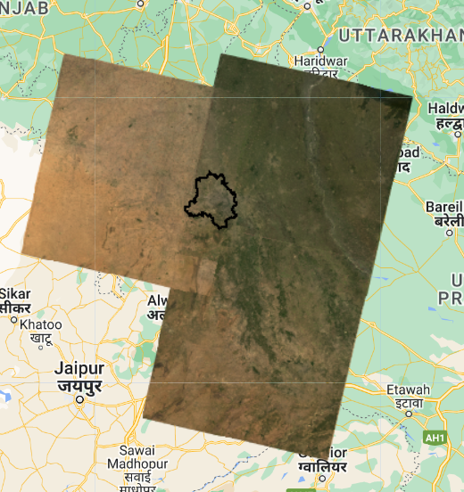
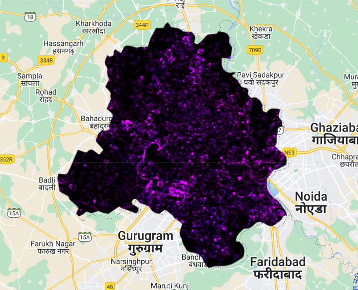

5 Google Earth Engine
5.1 Summary
Google Earth Engine is a cloud-based online platform providing access to huge amounts of analysis-ready data and high-performing computing resources (Gorelick et al. 2017). The ability to access to both large data and the computational power capable of handling it this enables large-scale analysis that is otherwise impossible using individual computers. It also allows to publish applications that end-users can directly interact with. This vastly increases the potential audience and the data available to them, having the potential to change decisions in many levels.
In terms of analysis, one important factor of Google Earth Engine is that we no longer have to worry too much about spatial resolutions and merging data. The spatial resolution is defined by the output resolution, and it automatically aggregates the data to match the desired output. The datasets organised into image collections enable simple filtering, merging and aggregating of multiple imageries.
5.1.1 An example using Delhi, India
My first data manipulation using Google Earth Engine was for Delhi, India - following the instructions on the module notebook.
The workflow was a very straightforward process - even if it did involve a bit of JavaScript - and I did not need to wait forever for my computer to process the huge raster files!
Extracting the datasets that cover the whole of the study area, while considering the cloud cover and period of observation, can be done by selecting data using code, easily achieving the following results.

Merging and clipping data did not take very long (much shorter compared to the local environment!), and we could calculate the texture component of the whole Delhi area.

This accessibility to the dataset is a massive improvement compared to manually locating and downloading files, using software to analyse, and producing outputs, all requiring some amount of effort.
5.2 Applications
Applications of Google Earth Engine spreads across various fields and areas, with high volumes of research published in the fields of agriculture, hydrology, and land use analysis; the majority using optical imagery data (Tamiminia et al. 2020; Amani et al. 2020).
One of these research application is done by Sidhu, Pebesma, and Câmara (2018), where they have explored the land use change in the island nation of Singapore. This research observes two phenomena: the dredging (expansion of land into the ocean by placing sand on the ocean floor) seen in the coastal industrial area, and the preservation of the natural environment in the Central Catchment Reserve (CCR). This was observed using the Enhanced Vegetation Index (EVI), calculated as follows:
\[ \text{EVI} = \frac{2.5\left(\rho_{\text{nir}}-\rho_{\text{red}}\right)}{\rho_{\text{nir}}+6\rho_{\text{red}}-7.5\rho_{\text{blue}}+1} \]
where \(\rho\) is the surface reflectance for each band.
This index was used due to its higher resistance to atmospheric noise, and is an index used to measure the vegetation level from satellite imagery. The strength of the Google Earth Engine was used in order to calculate the time series for the EVI in the study areas for a period of 5 years, and comparing 2 data sources (Landsat and MODIS). The observations at the CCR has shown there is a seasonal difference in the EVI levels due to the change of vegetation conditions, highlighting the monsoon season observed in this part of the world. However, the observations for the dredging area saw no significant sign of dredging captured from this EVI index. The EVI focuses on detecting vegetation, and it was difficult to detect the change from water (ocean) to bare soil (dredging). Although this research aimed to explore the potential of GGE, it is highlighting the need to consider indeces carefully to meet the needs of each research. Even with the high computational power and petabytes of data, the researchers must be aware of the processing tool we are using.
Google Earth Engine is capable of building spatial applications using Google Earth Engine Apps, which is another field where Google Earth Engine is spreading its use-cases. One example is the OFF!Cast Mosquito Forecast created by a pesticide brand OFF! predicting mosquito outbreaks within the United States. The weather data accumulated by Google Earth Engine is combined with a model comparing weather conditions to mosquito activities (Buonfantino 2022). This allows end-users to get the mosquito forecast for their area of interest by querying using their ZIP code. Although this may be a simplified analysis aimed to enhance the consumption of their products, it shows the possibility of highly-processed spatial data being tailor-made to fit each individuals’ interests.
These are 2 of the various applications made by Google Earth Engine. From within the academic realm to reaching out to individual end-users who are not expected to be familiar with wrangling spatial data, Google Earth Engine provides a platform to further expand the potential fields of application for spatial data analysis.
5.3 Reflections
I feel this is a completely different take by Google toward geospatial data; Google Maps is obviously not the only contribution by this tech giant company in the field of GIScience. (I recall a speech from someone at the Google Maps team emphasising the idea of self-healing maps being supported by a huge number of end-users, but this is more developer-oriented.)
After a few weeks of using massive earth observation data under the local environment, I have felt the limits of doing these analyses using limited computational power. Google Earth Engine lets us use tremendous amounts of data and cloud computers for analysis we could not have done before. The interesting addition to this is that you can publish apps that allow direct interaction with end-users!
I hope to explore further the world of remote sensing data with this recently growing tool!